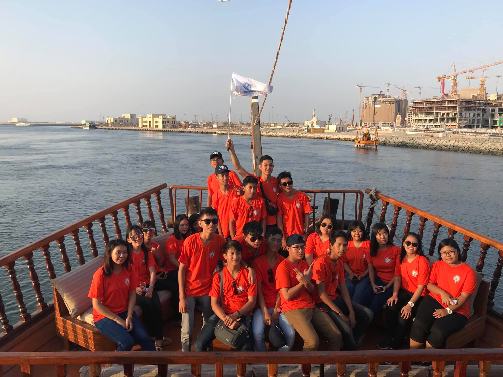
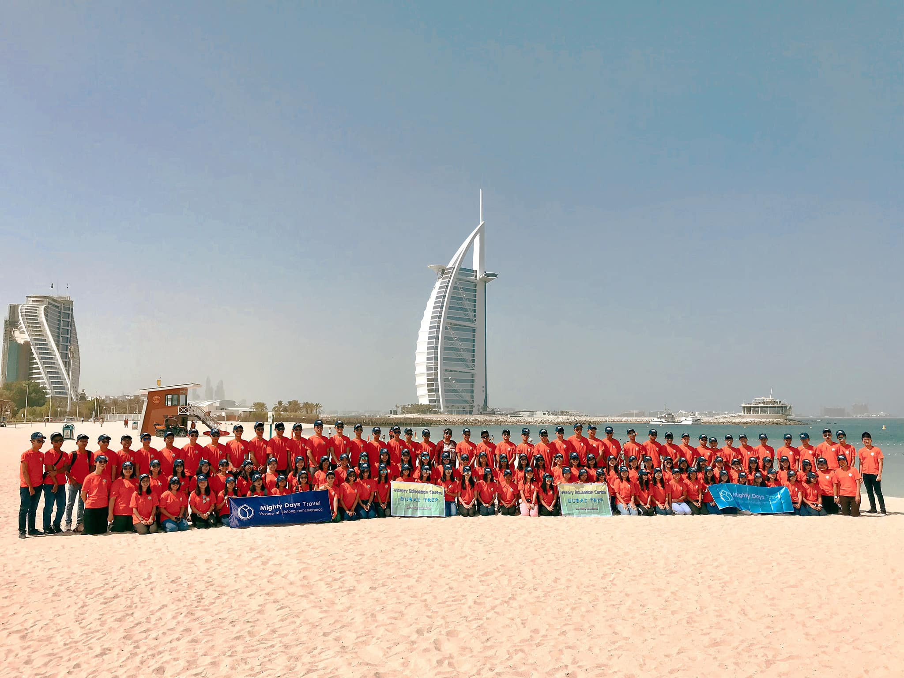

- Warmly Welcome for cooperating in building software projects.
I'm always open to collaborating on software projects and I love turning ideas into reality. If you're looking for a passionate, dedicated developer to contribute to your project, feel free to get in touch!
In 2018, I graduated my matriculation exam with 5 distinctions out of 6 subjects, placing me in the top 0.2% of students countrywide in a 30% passing rate exam.
Thus,I had the opportunity to go on a vacation to Dubai, generously sponsored by an educational organization as a token of appreciation for our accomplishments.
During the COVID-19 pandemic while the universities are shut down, I decided to switch my studies to Computer Science after receiving an acceptance letter from the University of London.
1 / 6

2 / 6

3 / 6
4 / 6
5 / 6
6 / 6
Working Experience and Projects
Projects
Internship Project: Development of a Fitness Web Application Under Professional Team Supervision
The project involves creating a confidential app that offers personalized diet and workout plans based on user input.
While the original app remains confidential, I have developed a demonstration version showcasing all functionalities. I can walk through the funtionalities during the interview. Users fill out a form with relevant data, and the app's algorithm generates customized diet and workout plans for the next three months, including meal instructions, videos, and descriptions tailored to the user's goals and needs.
The project is a music visualizer app that tracks bass, mid, and treble frequencies.
It utilizes geometry mathematics to interpret these frequencies and dynamically create shapes that correspond to the music's rhythm and intensity. The app provides a visually engaging experience for users, synchronizing shapes and patterns with the music in real-time.
The project is a C++ command-line interface application that utilizes given CSV market data. It cleans and prepares the data for use within the program. Users can build a wallet, trade cryptocurrencies, and request candlestick data plots directly within the CLI interface.
This module aims to provide us with an object-oriented programming skill set. We learned what objects and classes are and how to write classes. We saw how objects can interact with each other, including defining and implementing interfaces to control the interaction. We learned how to use inheritance to inherit and extend functionality from parent classes. We learned how to write code according to style guidelines and how to write formal code documentation.
Assessment - Coursework I (50%) & Coursework II (50%)
This module aims to provide insights and practice in software development using contemporary methods to produce software that meets the needs of users and supports an organisation’s business function. The module will enable you to gain competence in the conceptualisation of a technology-based solution to a real-world problem, fulfilling the requirements of users and taking constraints imposed by the prevailing and foreseen market conditions and lessons learned from prototypes into account.
Assessment - Coursework I (30%) &
Coursework II (70%)
In the past, engineers have been hired for their technical skills, but now that there is a need for companies to be more creative and think outside of the box, it has become necessary for them to hire those who are artists.